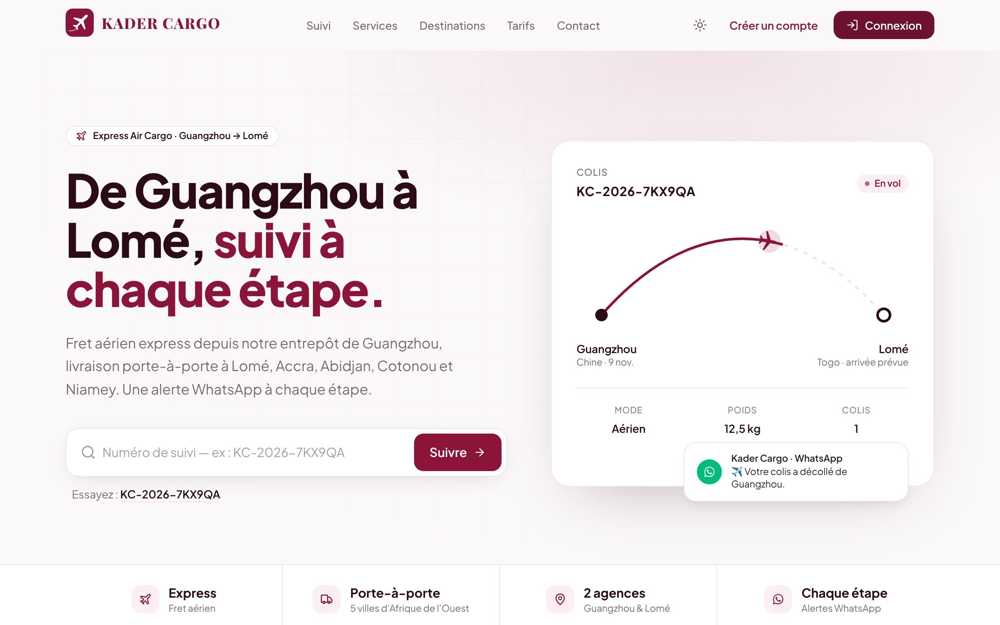
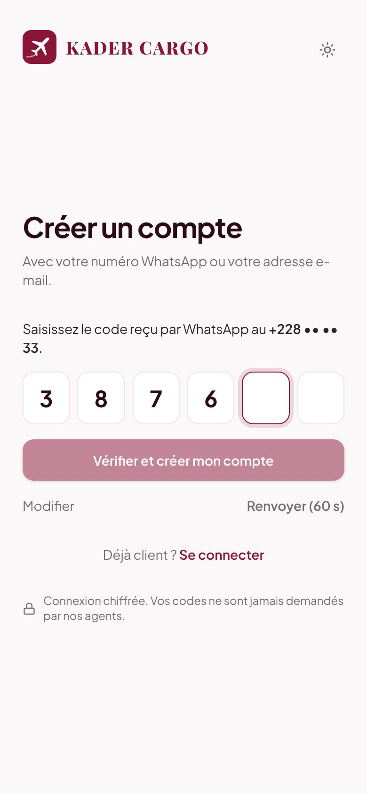
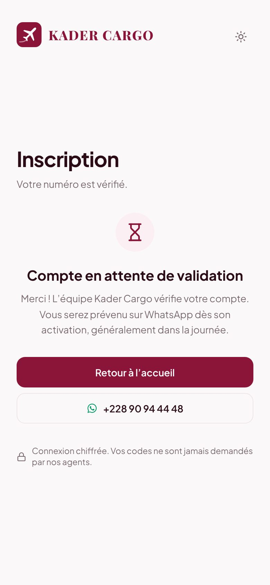
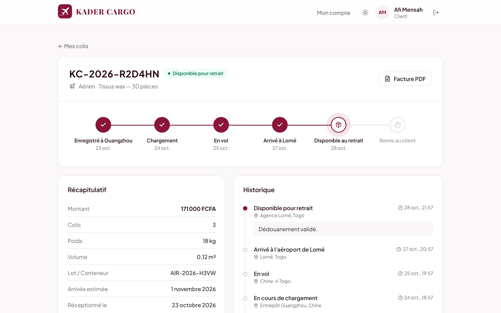
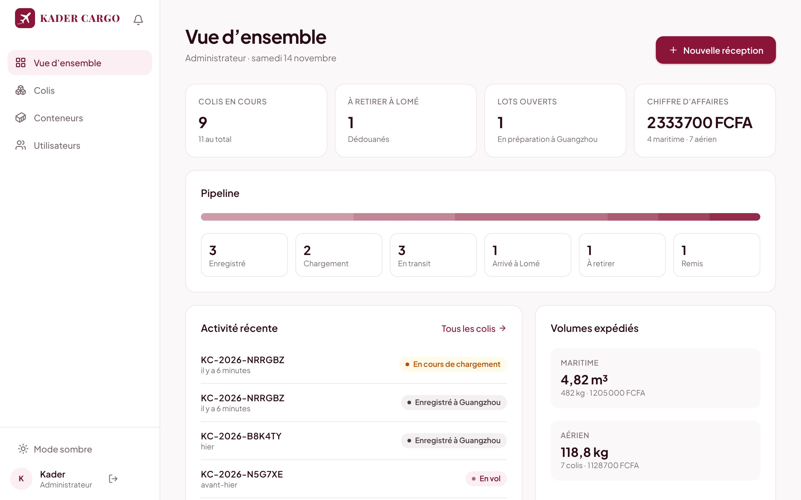
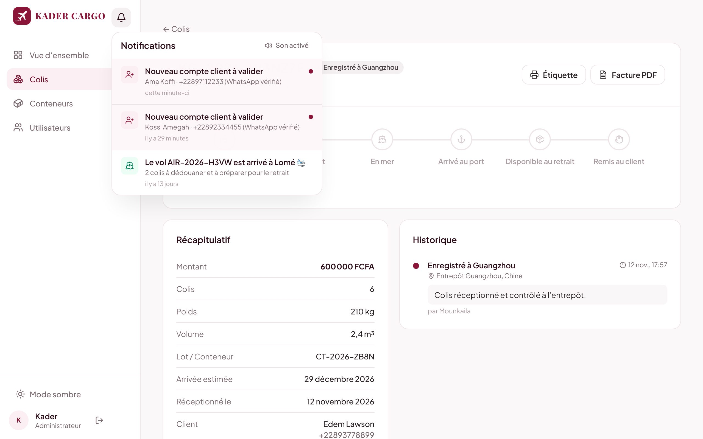
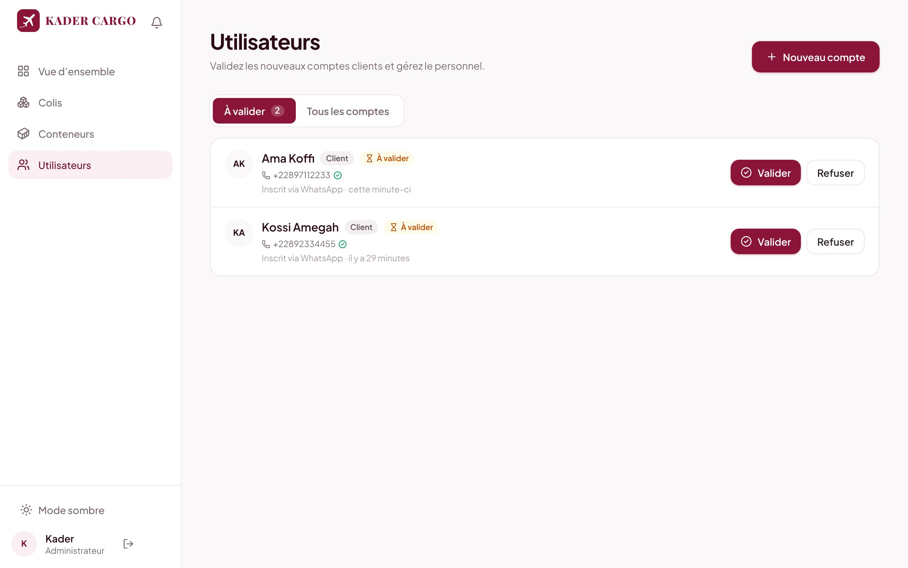
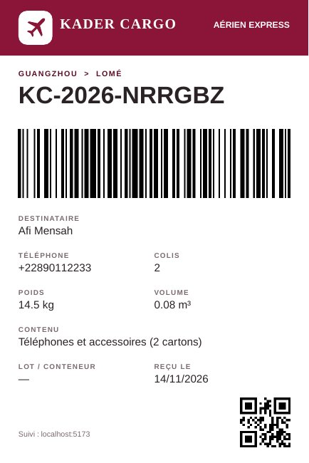
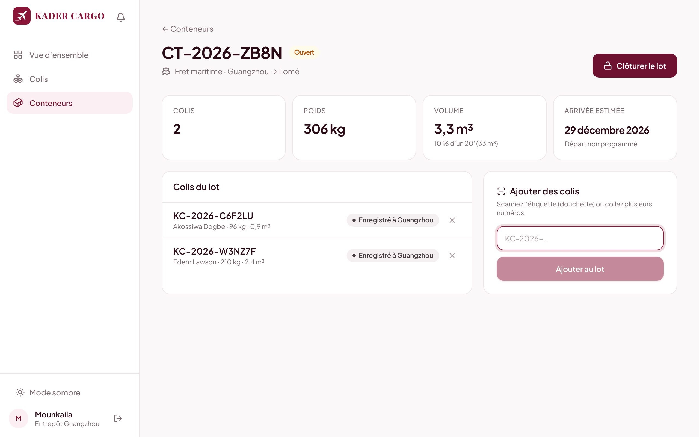
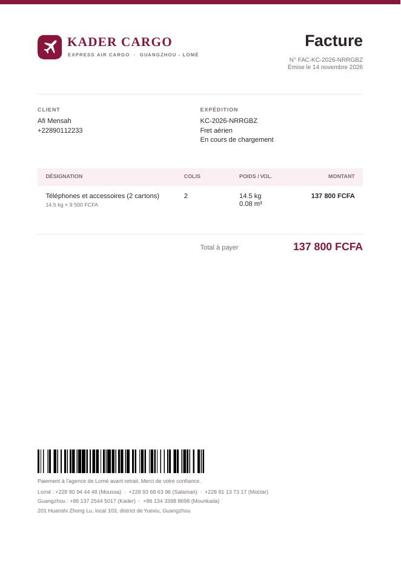

Ce guide explique l’utilisation de la plateforme Kader Cargo au quotidien : par vos clients (partie 2) et par votre équipe à Guangzhou et à Lomé (partie 3). L’installation et l’hébergement font l’objet d’un document séparé, le Guide technique.
Partie 1
Présentation de la plateforme
Ce que fait l’application, qui l’utilise, et le parcours d’un colis de Guangzhou à Lomé.
1.1Trois espaces dans une seule application
Espace
Pour qui
Ce qu’on y fait
Site public
Tout le monde
Présentation de Kader Cargo, tarifs, destinations, contacts, et suivi d’un colis avec son numéro, sans compte.
Espace client
Clients inscrits et validés
Tous ses colis au même endroit, photos de contrôle prises à l’entrepôt, factures PDF, gestion de ses moyens de connexion.
Back-office
Équipe Kader Cargo
Réception des colis à Guangzhou, lots/conteneurs, statuts, arrivée et remise à Lomé, validation des comptes, notifications sonores.

Page d’accueil du site : la barre de suivi est immédiatement visible.
1.2Les rôles
Chaque personne se connecte avec son propre compte. Ce qu’elle peut faire dépend de son rôle ; les boutons inutiles pour son rôle ne s’affichent pas, et le serveur refuse toute action non autorisée.
Rôle
Responsabilités
Client
Suivre ses colis, télécharger ses factures, voir les photos de contrôle.
Entrepôt Guangzhou
Enregistrer les colis reçus (poids, volume, photos), imprimer les étiquettes, préparer et clôturer les lots, déclarer le départ (en vol / en mer).
Agence Lomé
Déclarer l’arrivée à Lomé, valider le dédouanement (colis disponible), enregistrer la remise au client.
Administrateur
Tout ce qui précède, plus : valider les nouveaux comptes clients, créer les comptes du personnel, corriger un statut.
1.3Le parcours d’un colis
Un colis franchit six étapes. À chaque étape validée, le client reçoit automatiquement un message WhatsApp rédigé pour cette étape.
#
Étape
Validée par
Message WhatsApp reçu par le client
1
Enregistré à Guangzhou
Entrepôt Guangzhou
📦 Colis bien reçu — contenu, poids, montant, numéro de suivi
2
Chargement
Entrepôt Guangzhou
🗂️ Colis en préparation d’expédition
3
En vol / En mer
Entrepôt Guangzhou
✈️ Votre colis est en vol — date d’arrivée prévue
4
Arrivé à Lomé
Agence Lomé
🛬 Arrivé à Lomé, dédouanement en cours
5
Disponible au retrait
Agence Lomé
✅ Colis prêt — montant à régler, pièces à présenter, contact
6
Remis au client
Agence Lomé
🤝 Colis remis — remerciement
Numéro de suivi
Chaque colis reçoit un numéro unique au format KC-2026-7KX9QA. Il est envoyé au client par WhatsApp dès l’enregistrement et sert pour le suivi en ligne et pour le retrait à Lomé.
Partie 2
Guide du client
Les explications à transmettre à vos clients : suivre un colis, créer un compte, se connecter, retrouver ses factures.
2.1Suivre un colis (sans compte)
Ouvrez le site Kader Cargo et saisissez le numéro reçu par WhatsApp (par exemple KC-2026-7KX9QA) dans la barre de suivi, puis Suivre.
La page affiche l’étape actuelle, la date d’arrivée estimée, le détail du colis et l’historique complet.
Suivi public : le nom et le numéro du destinataire sont masqués pour protéger sa vie privée.
2.2Créer un compte
Le compte permet de retrouver tous ses colis, ses factures et les photos de contrôle. Il se crée avec un numéro WhatsApp ou une adresse e-mail (Gmail ou autre).
Cliquez sur Créer un compte (en haut du site), indiquez votre nom et votre numéro WhatsApp ou votre e-mail. Le mot de passe est facultatif.
Cliquez sur Recevoir mon code de vérification : un code à 6 chiffres arrive par WhatsApp (ou par e-mail).
Saisissez le code puis Vérifier et créer mon compte.
Le compte est en attente de validation par Kader Cargo. Vous êtes prévenu par WhatsApp ou e-mail dès qu’il est activé.
1 · Formulaire

2 · Code reçu

3 · En attente de validation
Conseil
Utilisez le même numéro que celui donné à votre fournisseur : les colis enregistrés à ce numéro apparaîtront automatiquement dans votre espace.
2.3Se connecter
Trois façons de se connecter, toutes liées au même compte :
Code WhatsApp / e-mail (recommandé) : saisissez votre numéro ou votre e-mail, cliquez sur Recevoir un code, puis saisissez le code reçu.
Mot de passe : onglet « Mot de passe », si vous en avez créé un.
Continuer avec Google : avec votre compte Gmail (si Kader Cargo a activé cette option).
Connexion par codeSaisie du code reçuEspace client
Sécurité
Un code est valable 10 minutes. Ne le communiquez jamais à personne, même à un agent Kader Cargo : nos équipes ne vous le demanderont jamais.
2.4Mes colis, factures et photos
L’espace client liste tous les colis enregistrés à votre numéro ou à votre e-mail, avec leur progression. Cliquez sur un colis pour voir :
la frise des 6 étapes et l’historique daté ;
le récapitulatif (montant, poids, volume, lot, arrivée estimée) ;
les photos de contrôle prises à la réception à Guangzhou (cliquez pour agrandir) ;
le bouton Facture PDF pour télécharger la facture.

Détail d’un colis dans l’espace client.
2.5Mon compte : moyens de connexion
Depuis Mon compte, le client gère tous ses moyens de connexion :
Téléphone WhatsApp : ajouter ou changer de numéro (vérifié par un code) ;
Adresse e-mail : ajouter ou changer (vérifiée par un code) ;
Compte Google : lier ou dissocier ;
Mot de passe : créer ou modifier.
Ajouter un numéro donne aussi accès aux colis enregistrés à ce numéro — c’est pourquoi chaque ajout est vérifié par un code.
Partie 3
Guide de l’équipe Kader Cargo
Back-office : administration, entrepôt de Guangzhou, agence de Lomé, notifications et alertes WhatsApp.
3.1Accéder au back-office
Allez sur la page Connexion, onglet Mot de passe, avec l’e-mail et le mot de passe de votre compte personnel. Vous arrivez sur la Vue d’ensemble : colis en cours, colis à retirer, lots ouverts, chiffre d’affaires, répartition par étape et activité récente. Le menu de gauche donne accès aux Colis, aux Conteneurs et, pour l’administrateur, aux Utilisateurs.

Vue d’ensemble. La cloche, en haut du menu, affiche un chiffre rouge dès qu’une notification arrive.
3.2Notifications sonores
La cloche en haut du menu prévient l’équipe en temps réel (vérification toutes les 10 secondes) :
nouveau compte client à valider Admin
conteneur / vol parti de Guangzhou
bateau ou vol arrivé à Lomé
colis arrivé à Lomé
alerte WhatsApp non délivrée Admin
À chaque nouvel événement : un son, une fenêtre à l’écran et le nombre dans le titre de l’onglet, par exemple « (2) Kader Cargo ». Cliquez sur une notification pour ouvrir la page concernée.

Panneau des notifications.
Activer le son
Par sécurité, les navigateurs n’autorisent le son qu’après un premier clic sur la page. Gardez le back-office ouvert dans un onglet et cliquez une fois dessus en début de journée. Le son se coupe ou se réactive dans le panneau (« Son activé »). Le lien « Recevoir aussi les notifications du navigateur » affiche des alertes même quand l’onglet est en arrière-plan.
3.3Administrateur : valider les comptes clients
Quand un client s’inscrit, la cloche sonne : « Nouveau compte client à valider ».
Ouvrez Utilisateurs → À valider. Chaque demande indique le nom, le numéro ou l’e-mail vérifié (coche verte) et le mode d’inscription.
Cliquez sur Valider : le compte devient actif et le client est prévenu par WhatsApp ou e-mail. Ou Refuser, avec un motif facultatif transmis au client.

Comptes en attente de validation.
Créer un compte pour le personnel ou un client
Bouton Nouveau compte : nom, rôle (Client, Entrepôt Guangzhou, Agence Lomé, Administrateur), e-mail et/ou téléphone, mot de passe initial (10 caractères minimum). Les comptes créés par l’agence sont actifs immédiatement. Le bouton Désactiver coupe l’accès d’un compte (départ d’un employé, par exemple) et ferme ses sessions.
3.4Entrepôt Guangzhou : réceptionner un colis
Cliquez sur Nouvelle réception et choisissez Aérien ou Maritime.
Renseignez le contenu, le nombre de colis, le poids (kg) et le volume (m³), puis le nom et le numéro WhatsApp du destinataire à Lomé.
Ajoutez les photos de contrôle (jusqu’à 8 ; elles sont réduites automatiquement avant l’envoi, même prises en haute résolution).
Vérifiez le montant estimé et cliquez sur Enregistrer & notifier.
Formulaire de réception. Le montant définitif est calculé automatiquement à l’enregistrement.
Le numéro de suivi est créé et le client prévenu sur WhatsApp.
L’écran de confirmation affiche le numéro de suivi. Cliquez sur Imprimer l’étiquette pour obtenir l’étiquette 10 × 15 cm (code-barres et QR code) à coller sur le colis.

Étiquette générée.
Le numéro WhatsApp est essentiel
C’est lui qui reçoit toutes les alertes et qui relie le colis à l’espace client. Vérifiez-le avec le client ou le fournisseur. Les numéros togolais à 8 chiffres sont complétés automatiquement en +228.
3.5Entrepôt Guangzhou : lots et conteneurs
Un lot regroupe les colis qui partent ensemble (un vol ou un conteneur maritime). Il permet de faire avancer tous ses colis en une seule fois.
Conteneurs → Nouveau lot : choisissez Aérien ou Maritime et la date d’arrivée estimée, puis Créer le lot.
Dans le lot, zone Ajouter des colis : scannez l’étiquette avec une douchette ou collez plusieurs numéros, puis Ajouter au lot. Les colis déjà expédiés ou d’un autre mode sont refusés avec la raison.
Quand le lot est prêt : Clôturer le lot. Tous ses colis passent à « Chargement » et chaque client est prévenu.
Au départ du vol ou du bateau : dans Mise à jour en masse, choisissez En vol (ou En mer), ajoutez une note si besoin (n° de vol…) et cliquez sur Appliquer à tout le lot.

Lot ouvert : liste des colis, poids, volume et taux de remplissage, ajout par scan.
3.6Agence Lomé : arrivée, dédouanement et remise
Arrivée : ouvrez le lot (Conteneurs) puis, dans Mise à jour en masse, choisissez Arrivé à Lomé et Appliquer à tout le lot. L’équipe reçoit la notification « vol / bateau arrivé ».
Dédouanement validé : choisissez Disponible au retrait. Le client reçoit le message « Votre colis est prêt » avec le montant à régler, les pièces à présenter et le contact de l’agence.
Remise : quand le client vient chercher son colis, ouvrez le colis (recherche par numéro, nom ou téléphone dans Colis) et validez Remis au client.
Mise à jour en masse d’un lot.Remise au client, avec l’aperçu du message.
Un statut ne peut qu’avancer
Les agents ne peuvent faire avancer un colis que vers les étapes de leur agence. En cas d’erreur, l’administrateur peut corriger un statut en arrière ; dans ce cas aucun message n’est envoyé au client, pour ne pas l’embrouiller.
3.7Alertes WhatsApp côté équipe
Aperçu : avant de valider une étape, la fiche du colis affiche le message exact que le client va recevoir, y compris votre note.
Une seule alerte par étape : valider deux fois la même étape n’envoie pas de doublon.
Historique : la fiche du colis liste chaque alerte avec son état — EnvoyéEn cours d’envoiÉchecSimulé.
Renvoyer : en cas d’échec (numéro erroné, téléphone éteint…), corrigez si besoin puis cliquez sur Renvoyer. Après 3 tentatives sans succès, l’administrateur est notifié.
Simulé signifie qu’aucun compte WhatsApp n’est encore configuré : le message n’est pas réellement parti. Ce réglage est fait par votre technicien (voir le Guide technique).
Aperçu du message avant validation.
3.8Factures et bonnes pratiques
La facture PDF (bouton « Facture PDF » sur chaque colis) reprend le client, l’expédition, le détail du calcul et le total. Le client la télécharge aussi depuis son espace.
Photographiez systématiquement les colis à la réception : c’est votre preuve en cas de litige.
Ajoutez une note utile lors des étapes clés (n° de vol, retard, horaires de retrait).
Gardez un onglet du back-office ouvert à Lomé pour entendre les arrivées.
Désactivez immédiatement le compte d’un employé qui quitte l’entreprise.

Facture générée automatiquement.
Annexes
Pour aller plus loin
Lexique, questions fréquentes, informations à confirmer et contacts.
ALexique
Terme
Signification
Numéro de suivi
Identifiant unique d’un colis, au format KC-2026-7KX9QA. Envoyé au client par WhatsApp dès la réception.
Lot / conteneur
Groupe de colis qui voyagent ensemble : un vol (lot aérien AIR-…) ou un conteneur maritime (CT-…).
Clôturer un lot
Fermer le lot quand il est complet : ses colis passent à « Chargement » et on ne peut plus en ajouter.
Mise à jour en masse
Faire avancer d’un coup tous les colis d’un lot clôturé (départ, arrivée, disponibilité).
Disponible au retrait
Étape qui confirme que le dédouanement est terminé : le client peut venir chercher son colis.
Code de vérification
Code à 6 chiffres envoyé par WhatsApp ou e-mail pour créer un compte ou se connecter. Valable 10 minutes, à ne jamais communiquer.
Compte en attente
Compte créé par un client mais pas encore validé par un administrateur : il ne permet pas encore de se connecter.
Alerte « Simulé »
Message préparé mais non envoyé, car aucun compte WhatsApp n’est configuré.
BQuestions fréquentes
Pour les clients
Question
Réponse
Je ne reçois pas le code.
Vérifiez le numéro (format +228…) et que WhatsApp est installé sur ce numéro. Pour un e-mail, regardez dans les indésirables. Un nouveau code peut être demandé après 60 secondes.
« Code invalide ou expiré ».
Le code est valable 10 minutes et seul le dernier code reçu fonctionne. Après 5 erreurs, demandez un nouveau code.
Je ne vois pas mon colis dans mon espace.
Le colis a sans doute été enregistré à un autre numéro. Ajoutez ce numéro dans Mon compte (vérifié par code) ou contactez l’agence.
Mon compte est « en attente ».
Kader Cargo valide chaque nouveau compte, en général dans la journée. Vous êtes prévenu par WhatsApp ou e-mail.
J’ai oublié mon mot de passe.
Connectez-vous avec un code WhatsApp ou e-mail : le mot de passe n’est pas nécessaire.
J’ai changé de numéro.
Connectez-vous (par e-mail ou mot de passe), puis Mon compte → Téléphone → Changer. Sinon, contactez l’agence de Lomé.
Pour l’équipe
Question
Réponse
J’ai validé une mauvaise étape.
Demandez à un administrateur de corriger le statut : la correction n’envoie aucun message au client.
Une alerte WhatsApp est en « Échec ».
Vérifiez le numéro du client dans la fiche du colis, puis cliquez sur Renvoyer. L’administrateur est prévenu après 3 tentatives sans succès.
Je n’entends pas les notifications.
Cliquez une fois dans la page du back-office, vérifiez « Son activé » dans la cloche et le volume de l’ordinateur.
Un colis est refusé lors de l’ajout à un lot.
La raison est affichée : colis déjà expédié, mode différent (aérien / maritime) ou déjà dans un autre lot clôturé.
Un employé a oublié son mot de passe.
Il peut se connecter avec un code envoyé à son e-mail ou à son numéro, onglet « Code WhatsApp / e-mail ».
« Trop de tentatives ».
Protection contre les attaques : 5 essais de mot de passe par 15 minutes. Patientez ou connectez-vous par code.
CInformations à confirmer par Kader Cargo
Élément
Valeur actuellement affichée
Tarif aérien
9 500 FCFA / kg (minimum 10 000 FCFA) — à confirmer